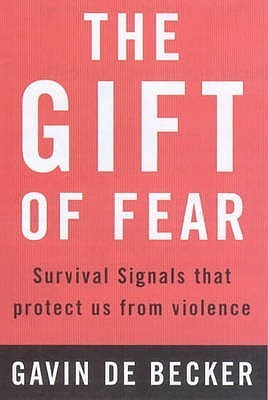

The Gift of Fear: Survival Signals That Protect Us from Violence
- Read on 2023-01-21
- Rating: ️️️️️
- Format: 🎧 (12 hours 50 minutes)
I read this book for a book club at work. I went into it hesitantly, yet I emerge almost entirely on board with Oprah's sentiment that everyone in America should read this book. (The difference is that Oprah said everyone should read it, but I feel like some nefarious individuals may read it simply for getting new ideas... so I'd prefer if they didn't read it.) As a male, as a father, as a husband, as a friend - I think I value the message of this book greatly, and the value of encouraging people to pay attention to their intuition/gut, truly assessing the risk of a situation, as well as acknowledging anxiety and concerns head-on to potentially live in a more relaxed state. I appreciated the author's articulation of things I was oblivious to, or hadn't been able to narrow in on. I'd like this to be required reading for all of my kids, both in terms of personal safety/sanity, as well as doing something that can be (for some reason) not as common - that of knowing that "no means no" no matter who it's coming from, and that sometimes it's better to be slightly rude in saying "no" in a more articulate and definite way, than to ignore your intuition.
There is quite a bit of true crime in the book, so if you're super sensitive to that, you'll need to be prepared to handle that. The overall message of the book is worth getting over that sensitivity.
Also, I can't imagine becoming the fixation of a true stalker. Oof.
- Prior: The Lost Metal
- Next: Tress of the Emerald Sea